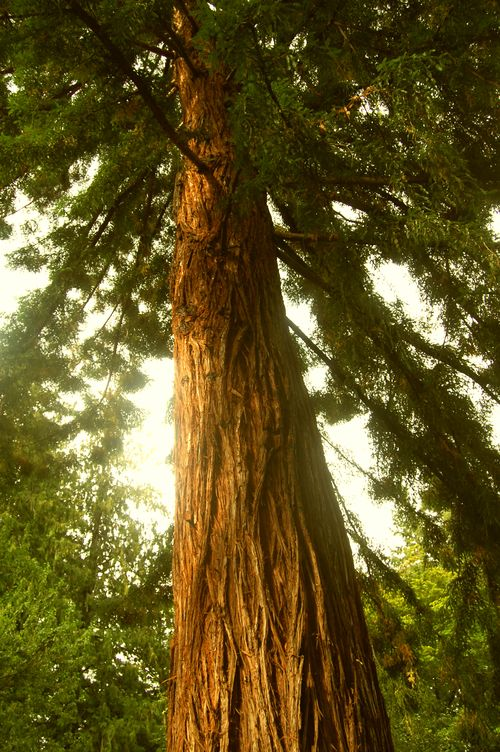
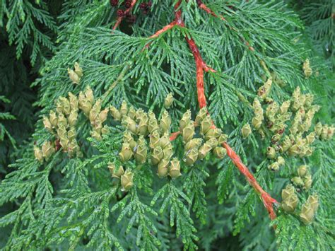

Red Cedar (Thuja plicata)
x̱ápay̓ay


Planting
Red Cedar is a large evergreen tree that prefers moist, well-drained soil. Here's how to plant a red cedar:
- Choose a location with full sun or partial shade.
- Dig a hole twice the diameter of the root ball and slightly deeper than the container.
- Place the tree in the hole and backfill it with soil, firming it gently.
- Water the tree thoroughly after planting and maintain regular watering until established.
Usage
Red Cedar has cultural and practical uses:
- The wood of red cedar is used for carving, building, and crafting.
- The bark and leaves have traditional uses in Indigenous cultures.
- The tree has spiritual significance and is often referred to as the "Tree of Life".
Environmental Impact
Red Cedar plays a vital role in the environment:
- The tree provides habitat for birds, mammals, and insects.
- Red Cedar forests contribute to carbon sequestration and help mitigate climate change.
- The tree's canopy provides shade, moisture regulation, and habitat for understory plants.